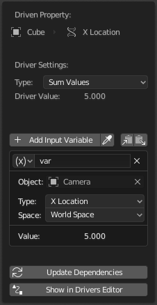
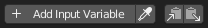
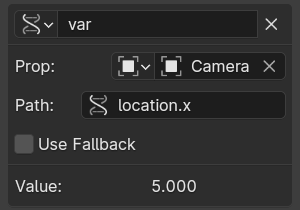
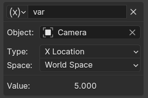
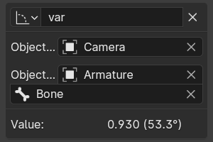
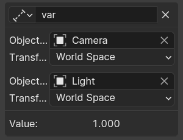
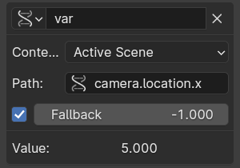
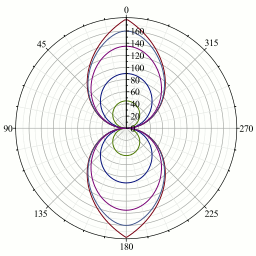

Panel Drivers¶

Popover Edit Driver.¶
Tham khảo
- Editor:
Graph editor
- Mode:
Drivers
- Panel:
- Shortcut:
N
Tham khảo
- Menu:
- Shortcut:
Ctrl-D
Panel này hiển thị trong Sidebar của Drivers Editor hoặc hiện dưới dạng popover khi thêm một driver vào thuộc tính.
Nó hiển thị thuộc tính đang được điều khiển bởi driver, tiếp theo là một loạt cài đặt quyết định cách driver hoạt động.
Cài đặt Driver¶
Type¶
Có hai loại driver:
Hàm tích hợp (Average, Sum, Min và Max)
Thuộc tính được điều khiển sẽ nhận giá trị trung bình, tổng, thấp nhất hoặc cao nhất (tương ứng) của các giá trị từ các Driver Variables được tham chiếu. Nếu chỉ có một driver variable thì các hàm này sẽ cho cùng kết quả.
Tùy chỉnh (Scripted Expression).
Một biểu thức Python tùy ý có thể tham chiếu đến các Driver Variables theo tên. Xem Biểu thức.
Driver Value¶
Kết quả hiện tại của thiết lập driver. Hữu ích cho mục đích gỡ lỗi.
Variables¶
Xem Driver Variables.
Update Dependencies¶
Buộc cập nhật các dependency của Driver Value.
Show in Drivers Editor¶
Mở Drivers Editor với đầy đủ tính năng. Nút này chỉ xuất hiện trong phiên bản popover của panel Drivers.
Driver Variables¶
Variable là tham chiếu đến thuộc tính, transform channel, hoặc kết quả của phép so sánh giữa phép biến đổi của hai object.
Driver nên truy cập dữ liệu object thông qua Driver Variables thay vì tham chiếu trực tiếp trong biểu thức Python, để các dependency được theo dõi chính xác.

Các nút Add, Copy, Paste.¶
- Add Input Variable
Thêm một Driver Variable mới.
- Copy/Paste Variables
Sao chép danh sách variable hiện tại để có thể dán vào danh sách variable của driver khác.
- Name
Tên dùng trong scripted expression. Tên phải bắt đầu bằng một chữ cái và chỉ chứa chữ cái, chữ số hoặc dấu gạch dưới.
- Variable Type
Loại variable sẽ dùng.
- Single Property

Lấy giá trị của một thuộc tính RNA, được chỉ định bằng một tham chiếu data-block và một chuỗi đường dẫn.
Với các thuộc tính biến đổi, loại này trả về giá trị chính xác của thuộc tính trong UI, trong khi Transform Channel sẽ tính đến parenting và/hoặc constraints khi cần.
See also Custom Properties.
- ID Type
Loại ID-block. Ví dụ: Key, Image, Object, Material.
- ID
ID của loại ID-block. Ví dụ: "Material.001".
- RNA Path
Tên RNA của thuộc tính, dựa trên một tập con của cú pháp truy cập thuộc tính Python. Ví dụ:
location.xhoặclocation[0]cho giá trị kênh animation vị trí X (trước parenting hoặc constraints), hoặc["prop_name"]cho một custom property.- Fallback
Nếu bật, cho phép chỉ định một giá trị fallback để dùng làm giá trị variable khi RNA Path không thể được phân giải, thay vì gây lỗi khi đánh giá driver. Để biết thêm thông tin, xem Context Property bên dưới.
Mẹo
Cách dễ nhất để tạo một variable loại này là dùng tùy chọn menu ngữ cảnh Copy As New Driver của thuộc tính đầu vào, rồi dán kết quả vào driver thông qua Paste Driver Variables.
- Transform Channel

Lấy giá trị của một Transform channel từ object hoặc bone.
- ID
ID của object. Ví dụ: Cube, Armature, Camera.
- Bone
Với armature, đây là tên bone trong Armature. Ví dụ: "Bone", "Bone.002", "Arm.r".
- Type
Ví dụ: X Location, X Rotation, X Scale.
Tùy chọn Average Scale lấy giá trị scale tổng hợp, được tính bằng căn bậc ba của tổng thay đổi thể tích. Khác với X/Y/Z Scale, giá trị này có thể là số âm nếu object bị lật bởi scale âm.
- Mode (Rotation)
Với các kênh quay, tùy chọn này chỉ định loại dữ liệu quay sẽ dùng, bao gồm các thứ tự Euler tường minh khác nhau. Mặc định dùng thứ tự Euler của mục tiêu. Xem Rotation Channel Modes.
- Space
World Space, Transform Space, Local Space.

- Rotational Difference
Cung cấp giá trị chênh lệch góc quay giữa hai object hoặc bone, theo radian.
- Bone
Với armature, đây là tên bone trong Armature. Ví dụ: "Bone", "Bone.002", "Arm.r".
- Distance

Cung cấp giá trị khoảng cách giữa hai object hoặc bone.
- Bone
Với armature, đây là tên bone trong Armature. Ví dụ: "Bone", "Bone.002", "Arm.r".
- Space
World Space, Transform Space, Local Space.
- Context Property

Cung cấp giá trị của một thuộc tính ngầm định tham chiếu đến scene hoặc view layer của hệ thống animation đang được đánh giá. Đây là một tham chiếu yếu, không khiến scene hay view layer được tham chiếu từ driver bị link theo khi link dữ liệu animation.
Một ví dụ khi các thuộc tính này phát huy tác dụng là tham chiếu đến phép biến đổi của camera đang hoạt động. Có thể thiết lập một driver trong file nhân vật, và để driver dùng camera đã thiết lập đó khi nhân vật được link vào một set.
- Context
Active Scene, Active View Layer.
- RNA Path
Tên RNA của thuộc tính, dựa trên một tập con của cú pháp truy cập thuộc tính Python. Ví dụ:
camera.location.xhoặccamera.location[0]cho giá trị kênh animation vị trí X của camera (trước parenting hoặc constraints), hoặc["prop_name"]cho một custom property.- Fallback
Nếu bật, cho phép chỉ định một giá trị fallback để dùng làm giá trị variable khi RNA Path không thể được phân giải, thay vì gây lỗi khi đánh giá driver.
Tính năng này rất hữu ích để driver trở nên bền vững hơn khi triển khai các tùy chọn toàn cục của scene bằng custom properties. Khi object được link vào một scene khác, các custom properties này có thể không tồn tại ở đó, và các giá trị fallback có thể được dùng để cung cấp giá trị mặc định hợp lý.
Fallback cũng có thể được dùng để mô phỏng hành vi tra cứu của chế độ View Layer của Attribute Node trong material.
Mẹo
Mặc dù giá trị của các kênh animation x/y/z cho vị trí camera có thể được truy cập qua
camera.location[0/1/2], việc lấy vị trí và hướng của camera trong world space sau parenting và constraints hiện tại cần dùngcamera.matrix_world. Thuộc tính này có thể được hiểu dễ dàng bằng cách xem ma trận như một mảng gồm bốn vector trong không gian World:matrix_world[0][0/1/2]là vector hướng Screen Right (X cục bộ của camera).matrix_world[1][0/1/2]là vector hướng Screen Up (Y cục bộ của camera).matrix_world[2][0/1/2]là hướng ngược lại với hướng camera đang chỉ tới.matrix_world[3][0/1/2]là vị trí của camera.
- Value
Hiển thị giá trị của variable.


Rotation Channel Modes¶
Các Transform Channel quay hỗ trợ một số chế độ hoạt động, bao gồm:
- Auto Euler
Dùng thứ tự Euler của mục tiêu để phân tách phép quay thành các kênh.
- XYZ Euler, ...
Chỉ định tường minh thứ tự quay Euler sẽ dùng.
- Quaternion
Cung cấp biểu diễn Quaternion của phép quay.
- Swing and X/Y/Z Twist
Phân tách phép quay thành hai phần: một phép quay Swing hướng trục được chỉ định theo hướng cuối cùng của nó, theo sau là một phép quay Twist quanh trục đó. Điều này thường cần thiết để điều khiển các Shape Keys chỉnh hình và bone cho chuyển động khớp tự nhiên.
Sự phân tách này thường được tạo trong rig bằng cách dùng một bone phụ trợ với Damped Track Constraint để tách phần swing, và bone con của nó với Copy Transforms để tách thành phần twist.
Giá trị các kênh cho Swing and Y Twist là:

Các đường falloff cho góc có trọng số.¶
- Y Rotation
Góc thực của phép quay twist.
- W Rotation
Góc thực của phép quay swing, không phụ thuộc hướng của nó.
- X Rotation, Z Rotation
Các góc có trọng số biểu thị mức độ swing quanh trục X/Z.
Độ lớn của góc bằng W Rotation khi phép quay thuần túy quanh trục đó, và giảm dần về 0 khi hướng thay đổi dần sang trục kia, theo các đường falloff trong đồ thị bên phải.
Về mặt toán học, các góc swing được tính từ các thành phần quaternion, dùng \(2 \arccos(w)\) cho W và \(2 \arcsin(x)\) v.v. cho các góc còn lại. Thành phần của phép quay swing tương ứng với trục twist luôn bằng 0 và được thay bằng góc twist.
Biểu thức¶
- Expression
Một trường văn bản nơi bạn có thể nhập một biểu thức Python tùy ý tham chiếu đến các Driver Variables theo tên của chúng.
Biểu thức có quyền truy cập một tập hằng số và hàm toán học chuẩn từ
math,bl_mathvà các module khác, được cung cấp trong Driver Namespace. Để xem ví dụ về cách thêm một hàm tùy chỉnh vào namespace, xem ví dụ về driver namespace.Vì lý do hiệu năng, tốt nhất là nên dùng tập con Simple Expressions càng nhiều càng tốt.
- Use Self
Nếu tùy chọn này được bật, variable
selfcó thể được dùng để driver tham chiếu dữ liệu của chính nó. Hữu ích cho object và bone để tránh phải tạo một Driver Variable trỏ đến chính nó.Ví dụ:
self.location.xáp dụng vào thuộc tính quay Y của cùng object sẽ khiến object xoay lăn khi di chuyển.Lưu ý rằng các dependency của thuộc tính được truy cập qua
selfcó thể không được theo dõi đầy đủ.
Simple Expressions¶
Blender có thể đánh giá trực tiếp một tập con hữu dụng của các biểu thức driver Python, giúp cải thiện hiệu năng đáng kể, đặc biệt trên hệ thống đa nhân. Để tận dụng điều này, biểu thức driver phải chỉ dùng các tính năng sau:
- Tên biến
Chỉ dùng ký tự ASCII.
- Literals
Số thực dấu phẩy động và số nguyên thập phân.
- Biến toàn cục
frame- Hằng số
pi,True,False- Operators
+,-,*,/,==,!=,<,<=,>,>=,and,or,not, toán tử điều kiện/ternary if- Hàm chuẩn
min,max,radians,degrees,abs,fabs,floor,ceil,trunc,round,int,sin,cos,tan,asin,acos,atan,atan2,exp,log,sqrt,pow,fmod- Hàm do Blender cung cấp
lerp,clamp,smoothstep
Biểu thức đơn giản vẫn được đánh giá kể cả khi việc chạy script Python bị tắt.
Khi một biểu thức nằm ngoài tập con này được dùng, Blender hiển thị cảnh báo "Slow Python expression". Tuy nhiên, miễn là phần lớn driver dùng biểu thức đơn giản, việc dùng biểu thức phức tạp trong một vài driver riêng lẻ vẫn không sao.
Xem thêm